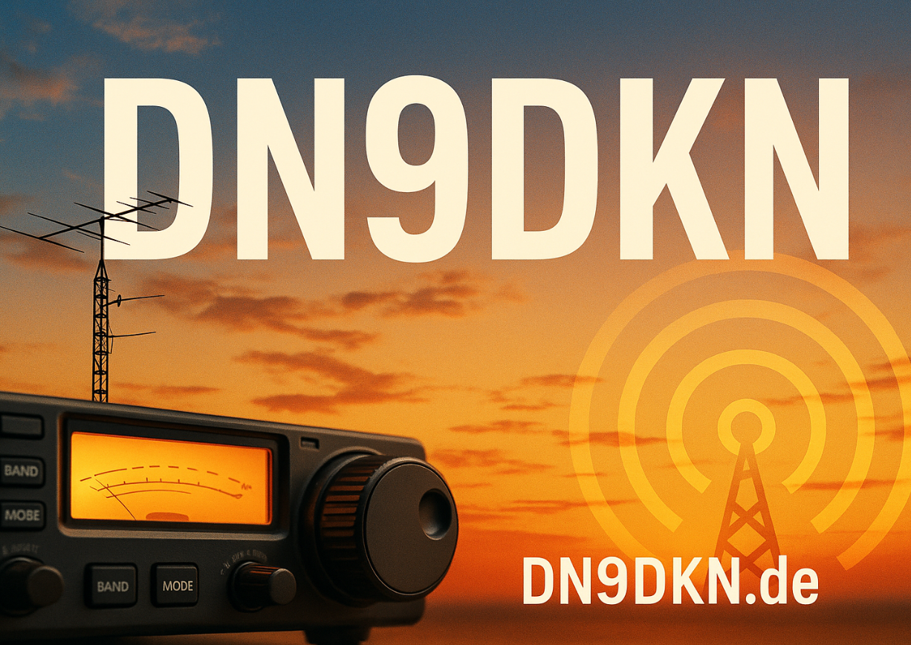

GERADE AUF SENDUNGON AIR ●
Beim Laden wird eine Verbindung zu DCLnext/DARC hergestellt. Dabei kann deine IP-Adresse übertragen werden.
DARC-Ortsverband N61 · 2027
Wir vom DARC-Ortsverband Paderborn N61 feiern 1250 Jahre Paderborn und sind vom 01.01. bis 31.12.2027 unter DL1250PB weltweit QRV. Unser Sonder-DOK lautet DL1250PB.

Seit 777.
Im Jahr 777 trat Paderborn erstmals ins Licht der Geschichte. 2027 feiert die Stadt dieses besondere Jubiläum – lebendig, vielfältig und mit Blick nach vorn.
Wir sind Mitglieder des DARC-Ortsverbands Paderborn N61. Vom 1. Januar bis zum 31. Dezember 2027 bringen wir das Jubiläum unter DL1250PB auf die Bänder.
GANZJÄHRIG QRV
DL1250PB ist vom 01.01. bis 31.12.2027 QRV. Konkrete Aktivierungen werden hier eingetragen; ein markierter Tag enthält mindestens einen Termin.
GEMEINSAM AUF SENDUNG
BESTÄTIGUNG
QSL-Karten über das Büro werden per Büro beantwortet. OQRS-Karten mit Versand über das Büro sind kostenlos. Direkt per Post eingesandte QSL-Karten benötigen einen SAE und eine Briefmarke oder 2 US-Dollar. Bitte beachte für OQRS und Postversand die Hinweise auf der OQRS-Seite.
QSL-Manager & Adresse öffnen →